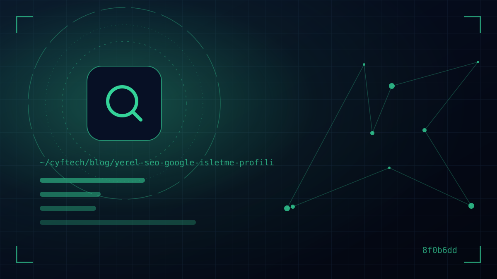

当有人在手机上输入“附近的水管工”或“Beşiktaş 早餐”时，会在结果最上方看到一张地图和三家商家。大部分点击都流向这三家。本地 SEO 就是让您成为这三家之一的工作。
本指南将介绍 Google 如何对本地结果进行排名、如何一步步创建并完善 Google 商家资料、评价中哪些做法被允许、哪些被禁止，以及您的网站如何助力本地曝光。我们也不会遗漏土耳其特有的一个细节：Yandex 地图。
如果您对 SEO 的基本逻辑还不熟悉，建议先 什么是 SEO 阅读我们的相关文章；本文将直接聚焦于本地方面。
什么是本地 SEO？对谁重要？
本地 SEO 是让企业在特定区域的搜索中，尤其是在 Google 地图和搜索结果的地图框（本地商家包）中获得曝光的工作。与传统 SEO 的区别在于，这里起决定作用的是位置和商家资料。
对两类企业来说，它直接关系到收入：
- 拥有实体店面的企业：餐厅、咖啡馆、诊所、美发店、商店、酒店、汽修店。客户上门找您。
- 服务区域型企业：水管工、电工、保洁公司、搬家公司、小区物业管理公司。您上门为客户服务。
本地搜索通常离购买决策非常近。输入“附近的药店”的人不想读文章，而是想获取路线或打电话。因此，本地曝光即使访问量不大，也能直接带来电话和到店客流。
Google 如何对本地结果进行排名？三个信号
Google 商家资料帮助页面明确写道，本地结果主要由三个因素决定：相关性、距离和知名度（受欢迎程度）。
| 信号 | 衡量什么？ | 您的掌控程度 |
|---|---|---|
| 相关性 | 您的资料与搜索内容的匹配程度 | 高：类别、简介、服务、产品、完整的信息 |
| 距离 | 商家与搜索者之间的距离 | 低：您无法改变地址；但可以正确设定服务区域 |
| 知名度 | 商家的知名程度 | 中：评价数量和评分、指向您网站的链接、网络上的提及 |
Google 在同一页面中给出了两条重要说明：无法通过申请或付费来获得更好的本地排名；此外，更多的评价和正面评分有助于提升本地排名。也就是说，本地 SEO 无法靠“购买套餐”取胜，而是要靠用心经营来强化资料。
如何一步步创建 Google 商家资料？
商家资料是免费的，可使用您的 Google 账号通过 business.google.com 开通。创建时最容易出错的地方如下：
- 1. 商家名称 —填写招牌和发票上的真实名称。像“Ahmet 师傅锅炉维修 最便宜 7/24”这样添加关键词违反 Google 规则，可能导致资料被暂停。
- 2. 主类别 —选择最能描述您业务的一个类别，再添加少量附加类别。类别是对排名影响最大的字段之一；但根据规则，不能像关键词那样随意堆砌。
- 3. 地址或服务区域 —如果您有接待客户的地址，请填写该地址。如果您是上门服务，请隐藏地址，并按区县和城市设定服务区域。虚拟办公室和邮政信箱地址不适用于商家资料。
- 4. 电话、网站、营业时间 —也请填写节假日和法定假日的特殊营业时间；在您停业的日子显示“营业中”，是招来差评最快的方式。
- 5. 验证 —Google 会根据商家情况提供不同的验证方式；通常会要求提供一段展示商家和招牌的短视频。未经验证的资料无法在本地结果中正常显示。
- 6. 简介、服务和产品 —用客户的语言说明您做什么、在哪里提供服务。不要在简介中放链接和折扣信息；这些受到规则限制。
一家商家只能开通一个资料。在同一地址开通第二个资料，或为每个区县分别开通虚假资料，是最常见的暂停原因之一。
Google 评价：如何获得更多评价，需要注意什么？
评价既影响排名，也影响点击决策。在一家评分 4.8、上个月刚收到评价的商家，与一家评分 3.9、最近一条评价还是两年前的商家之间，客户会如何选择不言而喻。
允许的做法
- 邀请每位完成服务的客户分享体验，无论正面还是负面
- 将资料中的“邀请评价”链接或二维码添加到发票、名片、电子邮件和 WhatsApp 消息中
- 礼貌地、以解决问题为导向回复每一条评价，尤其是负面评价
禁止的做法
Google 地图的用户贡献内容政策明确禁止虚假互动。请不要：
- 以折扣、礼品、免费商品或服务换取评价
- 只邀请满意的客户留评价，或试图阻止负面评价
- 要求客户必须在店内打分，或给员工设定评价指标
- 让员工、亲属或付费服务撰写评价
保持资料活跃：照片、帖子、问答
Google 将添加照片和视频列为推荐的步骤之一。店面外观、内部环境、团队、产品和已完成作品的真实照片，远比图库图片更有说服力。外观照片还能帮助初次到访的客户更容易找到您。
帖子（促销、活动、新动态）虽然不会直接提升排名，但能表明资料处于更新状态，并给客户多一个理由。每月发几条帖子，就足以保持稳定的节奏。
属性、服务与产品
资料中的“属性”字段是一个小而有效的细节：无障碍设施、停车场、Wi-Fi、预约服务、刷卡支付等选项，会让您在看重这些细节的客户的搜索中显得更相关。在服务部分，也不要只填写主营服务，而要添加客户会单独搜索的细分服务。对牙科诊所来说，把“种植牙”“牙齿美白”和“儿童牙科”分别列出，每一项都有机会匹配一次单独的搜索。
还有一点别忘了：资料中的信息不只有您能改，用户也可以通过“建议修改”来更改。请每月检查一次资料，纠正错误的营业时间、被标记为停业或电话错误等改动。
网站在本地 SEO 中的作用与 NAP 一致性
仅有资料还不够；Google 还会看资料链接指向的网站是否相关、可信。要让网站在本地搜索中表现强劲：
- NAP 一致性：商家名称（Name）、地址（Address）和电话（Phone）在您的网站、资料、社交媒体账号和行业目录中的写法必须完全一致。“Cad.”与“Caddesi”、新旧电话号码之类的差异会削弱信任。
- 服务页与区域页：为每项服务单独写一个页面。如果您有多家分店，请为每家分店开设独立页面，包含地址、营业时间、地图和团队。而仅仅替换区县名称的数百个复制页面则会被视为垃圾内容。
- 结构化数据：通过 LocalBusiness 类型的 schema 标记，以机器可读的方式向 Google 提供您的地址、电话和营业时间。标记必须与页面上显示的信息一致。
- 移动端与速度：大多数本地搜索来自手机。一键拨号和导航按钮、快速打开的页面必不可少。
所有这些技术细节， 我们的技术 SEO 检查清单 中都能找到。对于需要管理本地页面的多门店企业来说，与其使用现成模板， 按需设计的网站 通常是更灵活的解决方案。
不要忽视 Yandex 地图和其他平台
在土耳其，相当一部分搜索流量流向 Yandex；根据 Statcounter 2026 年 9 月的数据，Yandex 在土耳其的搜索份额约为 25%。通过 Yandex 自己的商家目录（Yandex Business）免费注册，并填写相同的 NAP 信息，花很少的精力就能获得额外的曝光。
针对 iPhone 用户，您可以通过 Apple Business Connect 管理您在 Apple 地图上的信息。导航和打车应用、外卖与订座平台等行业专属目录，也应按同样的原则保持更新：同一份正确信息，处处一致。
本地 SEO 中最强的信号，是一家让客户在任何地方都看到一致且正确信息的商家。
衡量成果与人工智能搜索中的本地曝光
商家资料的效果界面会显示您的资料被浏览了多少次、通过哪些搜索被找到，以及收到了多少次来电、路线请求和网站点击。请每月跟踪这些数据。在资料中的网站链接上添加 UTM 参数，可以在 Google Analytics 中单独查看这部分流量，从而区分访问来源。
在人工智能方面，本地信息同样重要。Google 的 AI 功能文档将保持商家资料信息最新列为获得良好曝光的基本建议之一。当用户在 AI 模式中提出“Kadıköy 适合带孩子家庭的安静咖啡馆”这样冗长而自然的问题时，答案会取材于资料信息、评价中的表述以及您网站上的内容。详细的服务列表和讲述客户真实体验的评价，在这里同样能带来优势。
如果在地图上获得曝光需要时间，而您又急需电话咨询，本地广告可以作为短期的过渡。什么时候适合投广告、什么时候适合做自然流量投入， Google Ads 还是 SEO？ 一文。
- 资料是否已验证，商家名称是否与招牌完全一致？
- 主类别是否最准确地描述了您的业务？
- 营业时间和特殊日期营业时间是否为最新？
- 是否已上传真实照片（外观、内部、团队、作品）？
- 过去一个月的所有评价是否都已回复？
- 名称、地址和电话在网站、Yandex 和社交媒体上是否一致？
- 从资料到网站的链接是否可以衡量？
常见问题
Google 商家资料收费吗？
不收费。开通、验证和管理 Google 商家资料都是免费的。Google 还表示，本地排名无法通过付费提升；地图结果中的广告是另一项付费服务，并会标注为广告。
没有地址也能在 Google 地图上注册吗？
可以。如果您上门为客户提供服务，可以注册为服务区域型商家，隐藏地址并标明您服务的区县和城市。但虚拟办公室和邮政信箱地址不被视为适用于商家资料。
Google 评价会影响排名吗？
会。根据 Google 帮助页面，更多的评价和正面评分有助于提升商家的知名度信号。Google 也建议回复评价。但以折扣或礼品换取评价、收集虚假评价都违反规则。
为什么在地图上竞争对手排在我前面？
通常是以下三个原因之一：竞争对手离搜索者更近；其资料更完整、类别更准确；或者其评价更多、更新。距离您无法改变，但可以强化您的资料信息、评价流和网站。
Google 商家资料验证需要多长时间？
验证方式因商家而异；通常会要求提供一段展示商家的短视频，审核可能需要几天。审核期间不要频繁修改信息，以免延长流程。
结语
本地 SEO 的公式并不复杂：一份经过验证且完整的资料、符合规则的稳定评价流、处处一致的联系信息，以及真正回应本地搜索的网站。把这些搭建好后每月检查一次，是守住您在地图上位置最可靠的方法。
CYF Tech 既设计适合本地搜索的网站，也帮助企业同时打理商家资料和网站两方面的工作。如果您想与我们一起查明为什么在地图上搜不到您， 与我们联系.